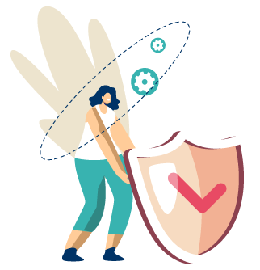

공격은 자동화되고, 방어는 더 빠르게 연결되어야 합니다. 웹 요청·응답 본문, 계정 행위, 서버·PC 이벤트, 포렌식 증거를 하나의 흐름으로 분석합니다. 로그가 남아야 공격을 보고, 연결되어야 막을 수 있습니다.
웹에서 시작된 공격은 서버 명령 실행, 계정 탈취, 내부 이동, 데이터 유출로 이어질 수 있습니다. PLURA는 수집→분석→차단→포렌식→증거화를 하나의 SaaS 운영 흐름으로 연결합니다.
웹 공격은 URL만 보아서는 충분하지 않습니다. 요청 본문, 응답 본문, 로그인 행위, 서버 이벤트를 함께 봐야 우회 인젝션, 웹셸, 데이터 유출 징후를 추적할 수 있습니다. PLURA-WAF는 정탐 강화·오탐 감소·미탐 보완을 목표로 운영됩니다.
단일 경보보다 중요한 것은 공격의 맥락입니다. PLURA는 프로세스 실행, 파일 변경, 네트워크 연결, 계정 행위를 ATT&CK 전술·기법과 연결해 분석합니다. 운영자가 이해할 수 있는 탐지 근거를 제공합니다.
크리덴셜 스터핑과 브루트포스는 로그인 성공 이후가 더 위험합니다. PLURA는 계정, IP, 위치, 속도, URL, 호스트 행위를 연결해 정상 로그인처럼 보이는 공격을 식별합니다. 탐지 후 정책에 따라 차단·격리·관제 연계가 가능합니다.
제로 트러스트는 제품명이 아니라 운영 아키텍처입니다. 사용자, 단말, 애플리케이션, 데이터 흐름을 지속적으로 검증하려면 근거 로그와 상관 분석이 먼저 확보되어야 합니다. PLURA-XDR은 검증 기반 보안 운영을 지원합니다.
WAF·EDR·Forensic 로그를 통합해공격 흐름을 맥락으로 분석합니다.

프로세스·파일·레지스트리·네트워크·계정 행위를연결 분석해 침해 흐름을 추적합니다.
요청·응답 본문과 로그인 행위를 연결 분석해우회 공격과 데이터 유출을 포착합니다.
운영체제 보안 설정과 감사 정책을 점검해위협을 탐지할 수 있는 환경을 만듭니다.